Notice: If you have trouble with the theme activation or installation visit please: Common 'Broken Theme' and 'Stylesheet Missing' WordPress Issues.
Notice: If you have trouble with the theme activation or installation visit please: Common 'Broken Theme' and 'Stylesheet Missing' WordPress Issues.
Attached images (WordPress dashboard - Installing new themes):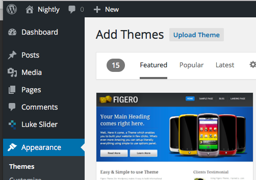
In WordPress dashboard Appearance > Menus add Font Awesome icons’ class into your menu items. Before each menu item add the whole class and save. Full list of available icons can be found on Font Awesome official page.
For example add line
<i class="fa fa-home fa-fw"></i>in front of your Home title. The final result should look like this:
Attached images (adding icons to navigation):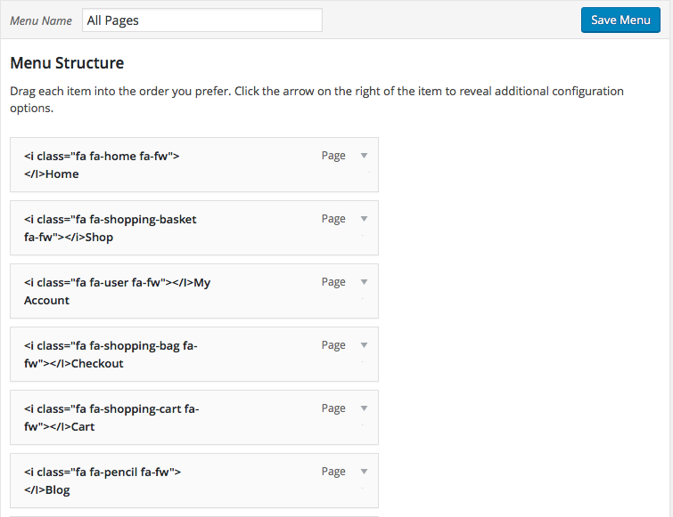
In order to have Boxed/Circle navigation you need to create new WordPress navigation (or use old one) and create new special page that will become Boxed/Circle navigation page.
Attached images (select the correct location):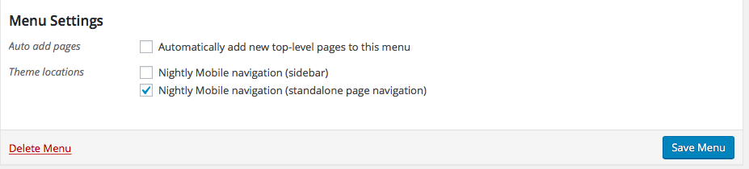
Attached images (creating new page for navigation):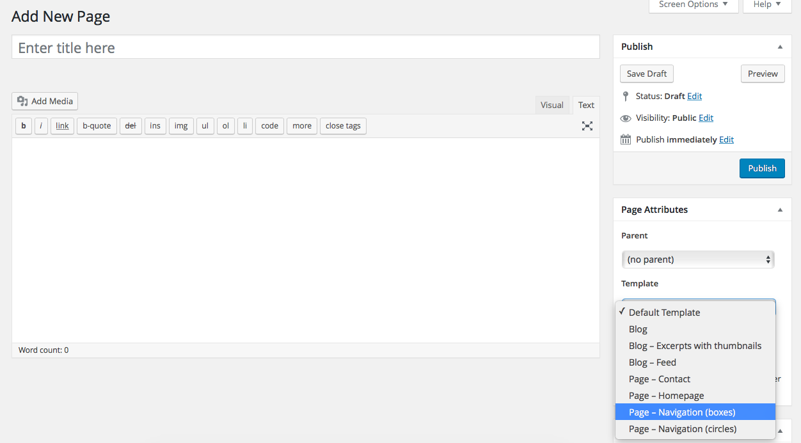
If you want to make a new navigation.
Attached images (creating new navigation):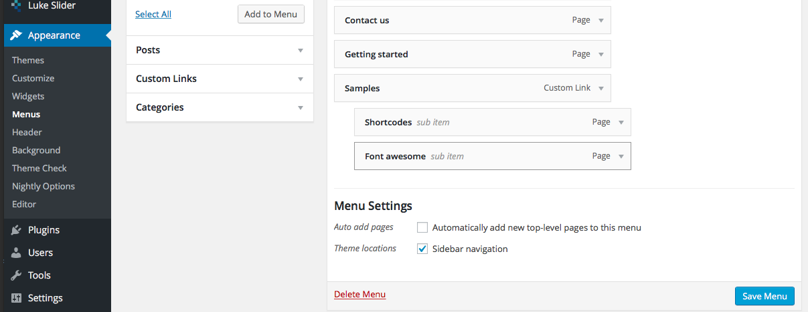
Nightly supports widgets. There are several things you need to know.
By default there are latest posts on the homepage. If you want to set static page as a homepage you'll have to:
Attached images (Static front page setup):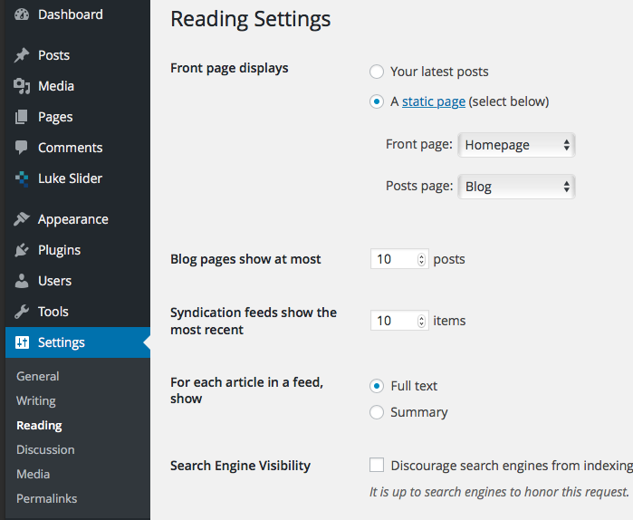
If you want to change footer text do it via Nightly Mobile option panel in Footer > Footer text.
WordPress basic post format. Use this for most of your posts, add featured image for nice look.
Styled without a title and featured image.
Attached images (Aside Format):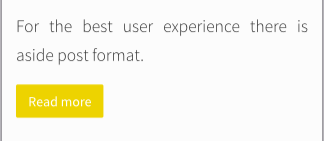
Single image with title and meta. URL of image is the post URL./p>
Attached images (Image Format):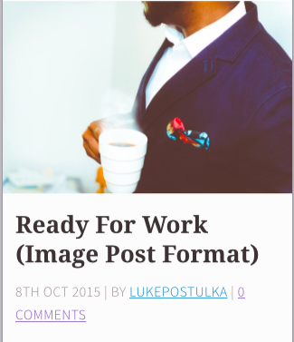
A link to another site. First link in the content will be used. Any additional content will be used as a description.
Attached images (Link Format):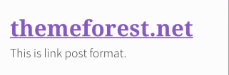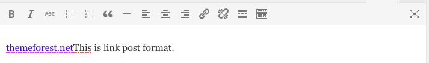
A quotation. For quote content place quote at the top and use "More" tag underneath it.
Attached images (Quote Format):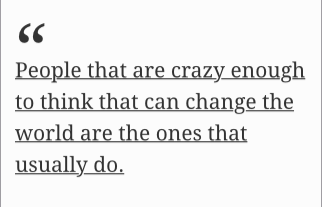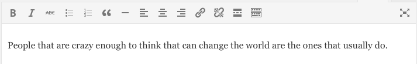
A single video. Place <video /> tag or object/embed in the post content first and then use the "More" tag. Alternatively, if the post consists only of a URL, that will be the video URL. May also contain the video as an attachment to the post.
Attached images (Video Format):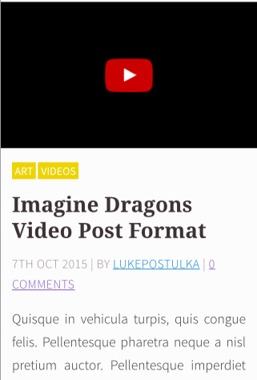
A single audio. Place <audio /> tag or object/embed in the post content first and then use the "More" tag. Alternatively, if the post consists only of a URL, that will be the audio URL. May also contain the audio as an attachment to the post.
A gallery of images. Don't use shortcode for gallery or other plugins. Just upload fresh image attachments with each gallery. Won't work for already uploaded images. Remmember - for each gallery you have to upload new attachments. All uploaded images to the post will be used as gallery images.
Attached images (Gallery Format and Gallery in Admin):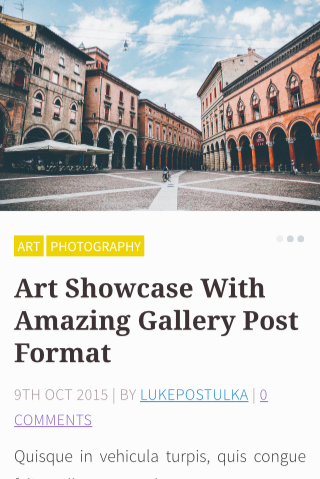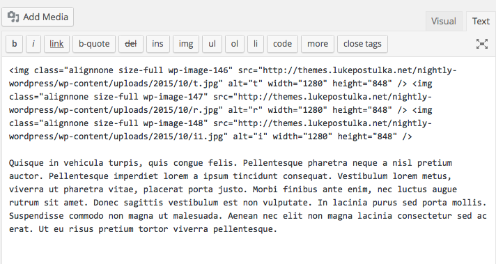
Nightly uses pre-defined HTML5 layout. Some basic elements like header, content and header are common for every page. Left and right sidebar. If you want to have scrolling sidebars use JQ library called iScroll. Basic jQuery and CSS skills are required. You can have fixed header and fixed footer.
Nightly uses default pre-defined CSS classes in the file style.css. Other CSS files can be found in folder css. I recommend you to do not edit those files, you may broke the theme. If this happends just download fresh installation from ThemeForest and replace damaged file with original.
This theme uses some jQuery libraries for work. If you want to install some new JS plugins or frameworks into theme do it without breaking compatibility with others. Some basic JS classes and functions can be found in js/nightly.js. This file contains callbacks for most jQuery frameworks used in this theme.
I would like to thank you for purchasing this theme. If you have any further questions you will catch me on support forum.
Finally I would be happy if you go to your Download page and rate this theme, it takes 1 minute but means lot to me. Thank you.
Attached images (rating theme):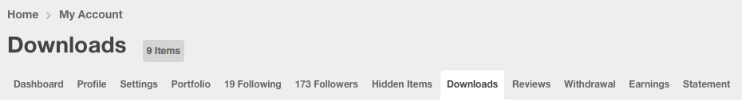
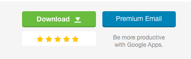
ThemeForest.net > Download page
Lukas Postulka (author)